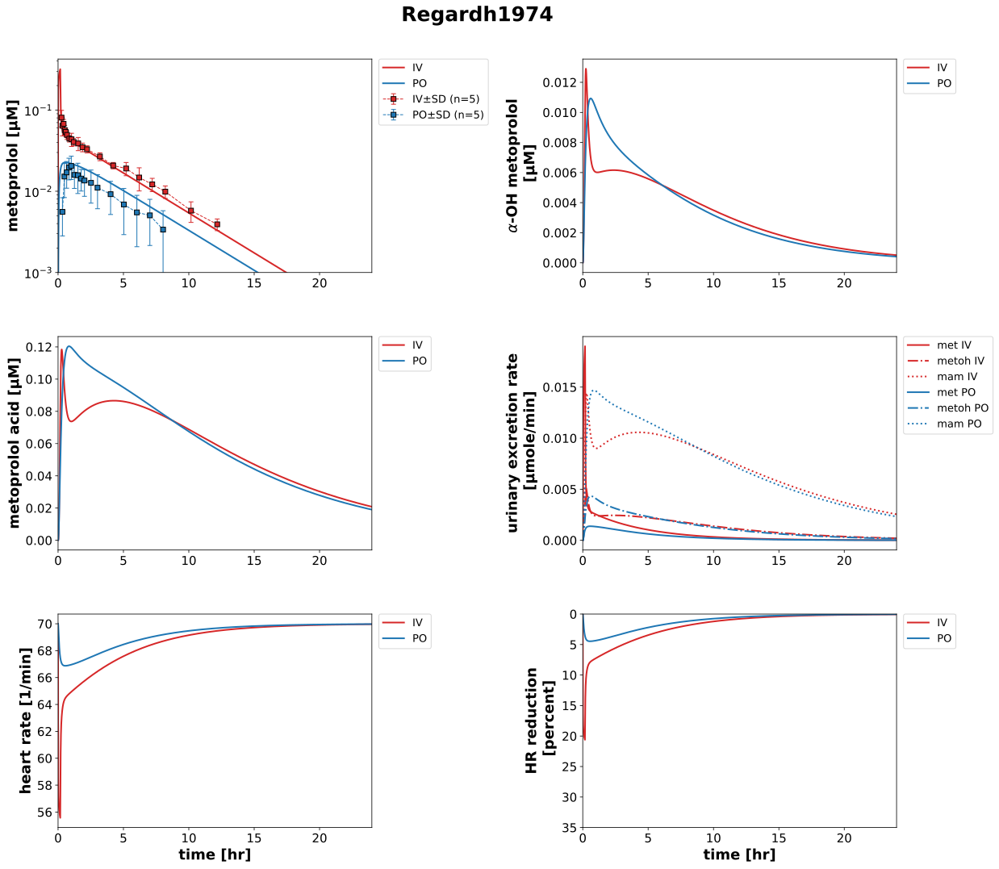
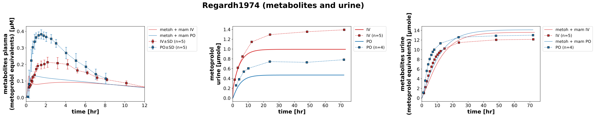

Overview
Models
| model | source |
|---|---|
| model | metoprolol_body_flat.xml |
Datasets
| dataset | file |
|---|---|
| Fig3_met_iv_metoprolol | datasets/Regardh1974_Fig3_met_iv_metoprolol.tsv |
| Fig3_met_iv_metoh_mam | datasets/Regardh1974_Fig3_met_iv_metoh_mam.tsv |
| Fig4_met_oral_metoprolol | datasets/Regardh1974_Fig4_met_oral_metoprolol.tsv |
| Fig4_met_oral_metoh_mam | datasets/Regardh1974_Fig4_met_oral_metoh_mam.tsv |
| Fig6_met_iv_metoprolol | datasets/Regardh1974_Fig6_met_iv_metoprolol.tsv |
| Fig6_met_oral_metoprolol | datasets/Regardh1974_Fig6_met_oral_metoprolol.tsv |
| Fig6_met_iv_metoh_mam | datasets/Regardh1974_Fig6_met_iv_metoh_mam.tsv |
| Fig6_met_oral_metoh_mam | datasets/Regardh1974_Fig6_met_oral_metoh_mam.tsv |
Figures (2)




Code
"""Simulation experiment of the study Regardh1974."""
from typing import ClassVar, override
from pkpdsim.metadata import (
ApplicationForm,
Dosing,
Fasting,
Health,
Phenotype,
PKPDData,
PKPDMappingMetaData,
Route,
Tissue,
)
from sbmlsim import Q
from sbmlsim.data import Data, DataSet
from sbmlsim.fit import FitData, FitMapping
from sbmlsim.plot import Axis, Curve, Figure, Plot
from sbmlsim.simulation import Simulation
from pkdb_models.models.metoprolol import MODEL
from pkdb_models.models.metoprolol.experiments.base_experiment import (
MetoprololSimulationExperiment,
)
from pkdb_models.models.metoprolol.experiments.figure_templates import (
EXCRETION_LINESTYLES,
fig_metoprolol,
)
class Regardh1974(MetoprololSimulationExperiment):
"""Simulation experiment of Regardh1974.
5 mg tritiated metoprolol tartrate as an oral solution and as an
intravenous infusion over 10 min (crossover) in 5 healthy fasted men
(62-70 kg, mean 66 kg). Plasma metoprolol and the total radioactive
metabolites (metoprolol equivalents, Fig3 IV, Fig4 oral, mean of 5), the
cumulative urinary recovery of metoprolol and of the metabolites over
72 hr (Fig6, IV n=5, oral n=4). The recovery of metoprolol after the oral
dose is not selective for metoprolol (paper), it is no usable data.
The times of the intravenous data count from the end of the infusion: the
paper fits the postinfusion concentrations, and the first sample (0.05 hr)
has 15 ng/ml of metabolites, which 3 min into the infusion of 5 mg could
not be formed. The simulation starts with the infusion, so the times of
the intravenous data are shifted by its duration (`iv_duration`).
"""
#: the routes: the oral solution and the intravenous infusion
routes: ClassVar[list[str]] = ["po", "iv"]
#: colors of the oral and the intravenous dose
route_colors: ClassVar[dict[str, str]] = {"po": "tab:blue", "iv": "tab:red"}
#: intervention of the data per route
interventions: ClassVar[dict[str, str]] = {"po": "met_oral", "iv": "met_iv"}
#: number of subjects per route of the urinary recovery (Fig6)
urine_counts: ClassVar[dict[str, int]] = {"po": 4, "iv": 5}
#: the substance of the radioactive metabolites in the data
metabolites: ClassVar[str] = "metoh+mam"
#: duration of the intravenous infusion, the data count from its end [hr]
iv_duration: ClassVar[float] = 10 / 60
@override
def datasets(self) -> dict[str, DataSet]:
dsets = {}
# plasma: metoprolol and the metabolites as metoprolol equivalents
for fig_id in ["Fig3", "Fig4"]:
for substance, df in self.load_dataframes_by_substance(fig_id).items():
dset = DataSet.from_df(df, self.ureg)
dset.unit_conversion("mean", 1 / self.Mr.met)
for intervention in df.intervention.unique():
dsets[self.to_sid(f"{fig_id}_{intervention}_{substance}")] = (
self._from_infusion_start(
dset[dset.intervention == intervention], intervention
)
)
# urine: the recovery [% of the dose] as amounts of metoprolol (the
# metabolites as metoprolol equivalents)
dose_mmole = (self.dose_base(5, "tartrate") / self.Mr.met).to("mmole")
for substance, df in self.load_dataframes_by_substance("Fig6").items():
dset = DataSet.from_df(df, self.ureg)
dset.unit_conversion("mean", dose_mmole)
for intervention in df.intervention.unique():
dsets[self.to_sid(f"Fig6_{intervention}_{substance}")] = (
self._from_infusion_start(
dset[dset.intervention == intervention], intervention
)
)
return dsets
def _from_infusion_start(self, dset: DataSet, intervention: str) -> DataSet:
"""Count the times of the intravenous data from the start of the infusion."""
if intervention == self.interventions["iv"]:
dset = dset.copy()
dset["time"] = dset["time"] + self.iv_duration
return dset
@override
def simulations(self) -> dict[str, Simulation]:
dose = self.dose_base(5, "tartrate")
changes = {**self.default_changes(), "BW": Q(66, "kg")}
preinit_iv, changes_iv = self.iv_infusion(dose, duration=Q(10, "min"))
return {
# the oral solution, no dissolution
"met_po5": Simulation(
time_unit="hr",
end=72,
preinit_changes={
**changes,
**self.application_changes("solution"),
"GUTDOSE_met": dose,
},
),
# the constant intravenous infusion over 10 min, the data to 72 hr
# after its end
"met_iv5": Simulation(
time_unit="hr",
end=73,
preinit_changes={**changes, **preinit_iv},
changes=changes_iv,
),
}
def _metadata(self, route: str, tissue: Tissue) -> PKPDMappingMetaData:
"""Get the metadata of a mapping of a route."""
return PKPDMappingMetaData(
tissue=tissue,
route=Route.PO if route == "po" else Route.IV,
application_form=ApplicationForm.SOLUTION,
dosing=Dosing.SINGLE,
health=Health.HEALTHY,
phenotype=Phenotype.NR,
fasting=Fasting.FASTED,
data=PKPDData.PK,
)
@override
def fit_mappings(self) -> dict[str, FitMapping]:
mappings = {}
for route, (key, fig_id) in {
"iv": ("iv", "Fig3"),
"po": ("oral", "Fig4"),
}.items():
intervention = self.interventions[route]
mappings[f"fm_met_{key}"] = FitMapping(
self,
reference=FitData(
self,
dataset=self.to_sid(f"{fig_id}_{intervention}_metoprolol"),
xid="time",
yid="mean",
yid_sd="mean_sd",
count=5,
),
observable=FitData(
self, task=f"task_met_{route}5", xid="time", yid="[Cveplasma_met]"
),
metadata=self._metadata(route, Tissue.PLASMA),
)
mappings[f"fm_urine_met_{key}"] = FitMapping(
self,
reference=FitData(
self,
dataset=self.to_sid(f"Fig6_{intervention}_metoprolol"),
xid="time",
yid="mean",
count=self.urine_counts[route],
),
observable=FitData(
self, task=f"task_met_{route}5", xid="time", yid="Aurine_met"
),
metadata=self._metadata(route, Tissue.URINE),
)
return mappings
@staticmethod
def _metabolites(task_id: str, kind: str) -> Data:
"""Get the sum of the metabolites of a task, in metoprolol equivalents.
Args:
task_id: the task.
kind: `plasma` for the concentrations, `urine` for the amounts.
"""
template = "[Cveplasma_{}]" if kind == "plasma" else "Aurine_{}"
return Data(
index=f"metabolites_{kind}_{task_id}",
function="metoh + mam",
variables={
sid: Data(template.format(sid), task=task_id)
for sid in ["metoh", "mam"]
},
)
def _add_metabolites(
self, plot: Plot, time: Data, task_id: str, kind: str, label: str, color: str
) -> None:
"""Add the sum of the metabolites of a task to a plot.
In a run over the draws of the fitted parameters (`uncertainty`) the
sum is the band of the draws: it is a function of the results, not a
selection of a task, which the run does not make a band of itself.
"""
y = self._metabolites(task_id, kind)
run = self.uncertainty
if run is None:
plot.add_curve(Curve(x=time, y=y, label=label, color=color))
else:
plot.band(
x=time,
y=y,
across=run.id,
quantiles=run.quantiles,
name=label,
color=color,
)
@override
def figures(self) -> dict[str, Figure]:
fig, plots = fig_metoprolol(self, fig_id="Fig1")
# the data is on a log scale in the publication
plots[0].set_yaxis(self.label_met, self.unit_met, scale="log", min=1e-3)
for route, fig_id in [("iv", "Fig3"), ("po", "Fig4")]:
intervention = self.interventions[route]
color = self.route_colors[route]
label = route.upper()
task_id = f"task_met_{route}5"
# data
plots[0].add_data(
dataset=self.to_sid(f"{fig_id}_{intervention}_metoprolol"),
xid="time",
yid="mean",
yid_sd="mean_sd",
count=5,
label=label,
color=color,
)
# simulations
for k, sid in enumerate(["met", "metoh", "mam"]):
plots[k].add_data(
task=task_id,
xid="time",
yid=f"[Cveplasma_{sid}]",
label=label,
color=color,
)
plots[3].add_data(
task=task_id,
xid="time",
yid=f"KI__{sid.upper()}EX",
label=f"{sid} {label}",
color=color,
linestyle=EXCRETION_LINESTYLES[sid],
)
for k, yid in [(4, "HReff"), (5, "HRred")]:
plots[k].add_data(
task=task_id, xid="time", yid=yid, label=label, color=color
)
for plot in plots:
if plot.xaxis is not None:
plot.xaxis.min = 0
plot.xaxis.max = 24
return {"fig1": fig, "metabolites": self._figure_metabolites()}
def _figure_metabolites(self) -> Figure:
"""Get the figure of the metabolites in plasma and the urinary recovery."""
fig = Figure(
experiment=self,
sid=self.to_sid("metabolites"),
num_rows=1,
num_cols=3,
name=f"{self.sid} (metabolites and urine)",
)
plots = fig.create_plots(
xaxis=Axis(self.label_time, self.unit_time), legend=True
)
plots[0].set_yaxis("metabolites plasma\n(metoprolol equivalents)", "µM")
plots[1].set_yaxis(f"{self.label_met}\nurine", self.unit_urine)
plots[2].set_yaxis("metabolites urine\n(metoprolol equivalents)", "µmole")
for plot in plots:
if plot.xaxis is not None:
plot.xaxis.min = 0
if plots[0].xaxis is not None:
plots[0].xaxis.max = 12
for route, fig_id in [("iv", "Fig3"), ("po", "Fig4")]:
intervention = self.interventions[route]
color = self.route_colors[route]
label = route.upper()
task_id = f"task_met_{route}5"
time = Data("time", task=task_id)
plots[0].add_data(
dataset=self.to_sid(f"{fig_id}_{intervention}_{self.metabolites}"),
xid="time",
yid="mean",
yid_sd="mean_sd",
count=5,
label=label,
color=color,
)
self._add_metabolites(
plots[0], time, task_id, "plasma", f"metoh + mam {label}", color
)
plots[1].add_data(
task=task_id, xid="time", yid="Aurine_met", label=label, color=color
)
plots[1].add_data(
dataset=self.to_sid(f"Fig6_{intervention}_metoprolol"),
xid="time",
yid="mean",
count=self.urine_counts[route],
label=label,
color=color,
)
self._add_metabolites(
plots[2], time, task_id, "urine", f"metoh + mam {label}", color
)
plots[2].add_data(
dataset=self.to_sid(f"Fig6_{intervention}_{self.metabolites}"),
xid="time",
yid="mean",
count=self.urine_counts[route],
label=label,
color=color,
)
return fig
if __name__ == "__main__":
MODEL.run_experiments(Regardh1974, output_dir="test")